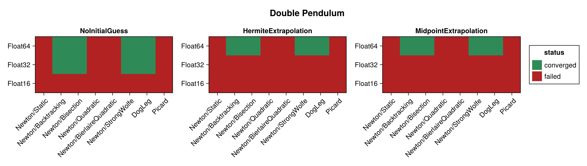
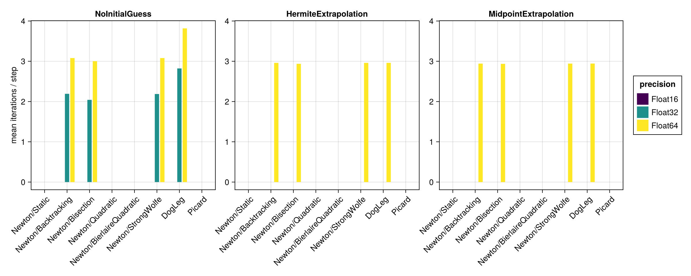
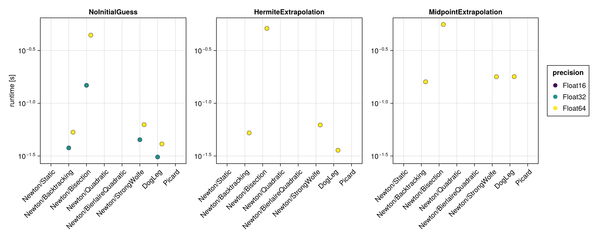
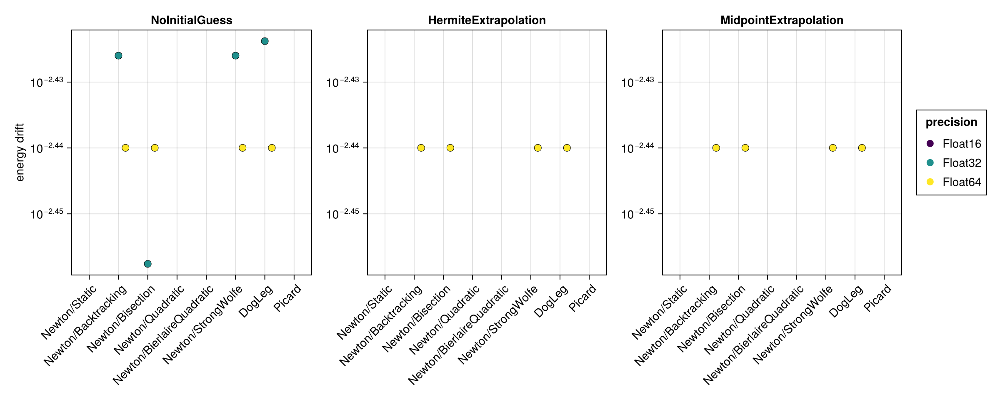
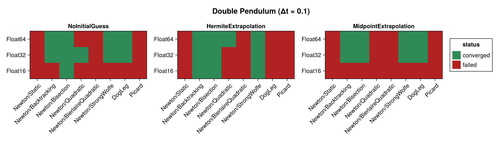
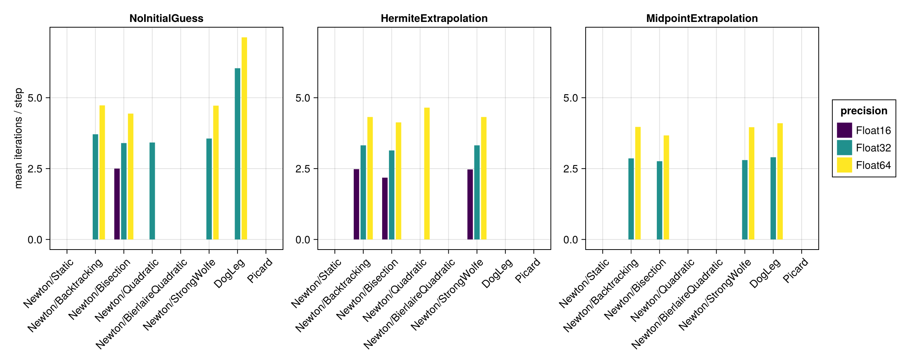
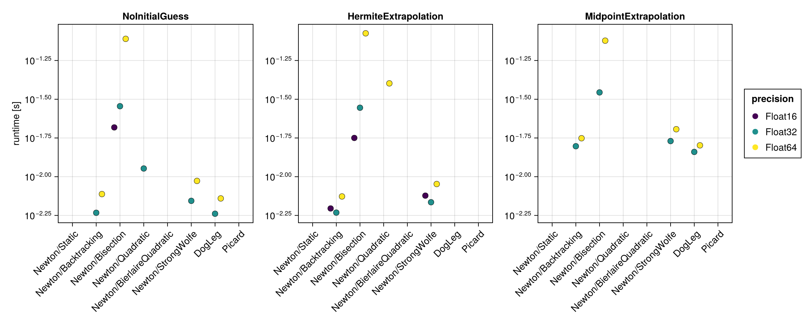
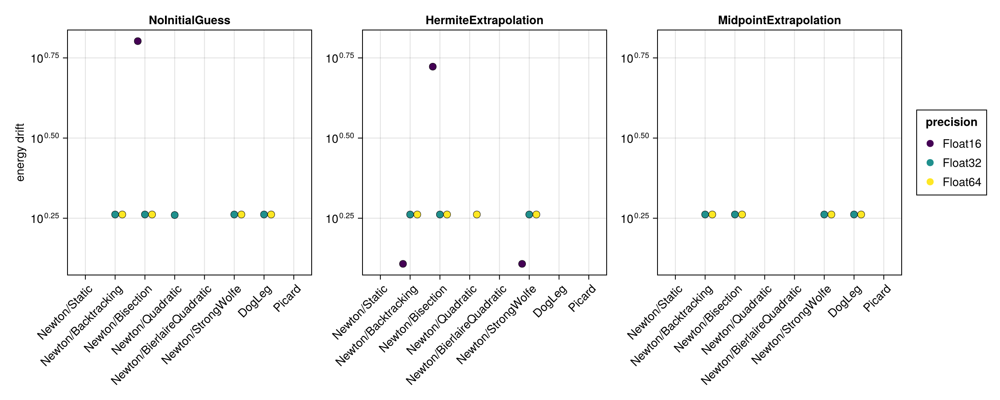

Double Pendulum
The double pendulum is a chaotic, strongly nonlinear Hamiltonian system. It is built here with hodeproblem (the canonical Hamiltonian form), so the implicit midpoint equations require genuine nonlinear iterations at every step. Because the Hamiltonian $H(t, q, p)$ depends on both the coordinates $q$ and the momenta $p$, the energy-drift proxy is evaluated from the full $(q, p)$ state.
The benchmark below is regenerated at documentation build time with a single, fast timing pass. See the driver script scripts/double_pendulum.jl for accurate BenchmarkTools measurements. The results are shown first for the standard step $\Delta t = 0.01$ and then repeated for a coarse step $\Delta t = 0.1$ (see Coarse time step (Δt = 0.1)).
using SolverBenchmark
spec = double_pendulum_spec(timespan = (0.0, 10.0), timestep = 0.01)
df = run_benchmark(spec; timing = :quick, verbose = false, quiet = true)Convergence
plot_convergence(df; title = "Double Pendulum")
Nonlinear iterations
Mean number of nonlinear-solver iterations per time step (converged runs only):
plot_iterations(df)
Run time
plot_runtime(df)
Energy drift
Drift of the conserved energy $H(t, q, p)$ of the double pendulum:
plot_energy_drift(df)
Discussion
- The problem is chaotic and nonlinear, so Newton needs genuine iterations at every step. The robust line searches behave similarly, while the less robust ones (e.g.
Newton/Quadratic) may fail to converge. - No closed-form solution is available, so accuracy is judged solely through the energy drift, which scales with the floating point precision.
Results table
markdown_table(summary_table(df))| precision | solver_label | initial_guess | converged | iterations_mean | runtime_s | max_residual | energy_drift |
|---|---|---|---|---|---|---|---|
| Float16 | Newton/Static | NoInitialGuess | ✗ | 2.66 | 0.0365 | 0.152 | — |
| Float16 | Newton/Static | HermiteExtrapolation | ✗ | — | — | — | — |
| Float16 | Newton/Static | MidpointExtrapolation | ✗ | 2.54 | 0.153 | 0.152 | — |
| Float16 | Newton/Backtracking | NoInitialGuess | ✗ | 2.55 | 0.0581 | 0.152 | — |
| Float16 | Newton/Backtracking | HermiteExtrapolation | ✗ | — | — | — | — |
| Float16 | Newton/Backtracking | MidpointExtrapolation | ✗ | 3.13 | 0.189 | 0.11 | — |
| Float16 | Newton/Bisection | NoInitialGuess | ✗ | 1.85 | 0.152 | 0.0813 | — |
| Float16 | Newton/Bisection | HermiteExtrapolation | ✗ | — | — | — | — |
| Float16 | Newton/Bisection | MidpointExtrapolation | ✗ | 3.69 | 0.466 | 0.11 | — |
| Float16 | Newton/Quadratic | NoInitialGuess | ✗ | — | — | — | — |
| Float16 | Newton/Quadratic | HermiteExtrapolation | ✗ | — | — | — | — |
| Float16 | Newton/Quadratic | MidpointExtrapolation | ✗ | — | — | — | — |
| Float16 | Newton/BierlaireQuadratic | NoInitialGuess | ✗ | — | — | — | — |
| Float16 | Newton/BierlaireQuadratic | HermiteExtrapolation | ✗ | — | — | — | — |
| Float16 | Newton/BierlaireQuadratic | MidpointExtrapolation | ✗ | — | — | — | — |
| Float16 | Newton/StrongWolfe | NoInitialGuess | ✗ | 2.07 | 0.0611 | 0.0483 | — |
| Float16 | Newton/StrongWolfe | HermiteExtrapolation | ✗ | — | — | — | — |
| Float16 | Newton/StrongWolfe | MidpointExtrapolation | ✗ | 2.44 | 0.194 | 0.0788 | — |
| Float16 | DogLeg | NoInitialGuess | ✗ | 2.47 | 0.0377 | 0.1 | — |
| Float16 | DogLeg | HermiteExtrapolation | ✗ | — | — | — | — |
| Float16 | DogLeg | MidpointExtrapolation | ✗ | 3.64 | 0.173 | 0.0421 | — |
| Float16 | Picard | NoInitialGuess | ✗ | 100 | 1.6 | 39.7 | — |
| Float16 | Picard | HermiteExtrapolation | ✗ | — | — | — | — |
| Float16 | Picard | MidpointExtrapolation | ✗ | 96.8 | 1.38 | 3.74 | — |
| Float32 | Newton/Static | NoInitialGuess | ✗ | 2.67 | 0.0287 | 2.31e-05 | — |
| Float32 | Newton/Static | HermiteExtrapolation | ✗ | 2.68 | 0.0303 | 1.91e-05 | — |
| Float32 | Newton/Static | MidpointExtrapolation | ✗ | 2.94 | 0.136 | 1.91e-05 | — |
| Float32 | Newton/Backtracking | NoInitialGuess | ✓ | 2.19 | 0.0377 | 7.6e-06 | 0.00375 |
| Float32 | Newton/Backtracking | HermiteExtrapolation | ✗ | 2.28 | 0.0456 | 6.88e-06 | — |
| Float32 | Newton/Backtracking | MidpointExtrapolation | ✗ | 3.12 | 0.17 | 4.77e-06 | — |
| Float32 | Newton/Bisection | NoInitialGuess | ✓ | 2.04 | 0.148 | 1.72e-05 | 0.00349 |
| Float32 | Newton/Bisection | HermiteExtrapolation | ✗ | 2.1 | 0.165 | 1.38e-05 | — |
| Float32 | Newton/Bisection | MidpointExtrapolation | ✗ | 2.71 | 0.323 | 9.94e-06 | — |
| Float32 | Newton/Quadratic | NoInitialGuess | ✗ | 3.12 | 0.0961 | 0.0005 | — |
| Float32 | Newton/Quadratic | HermiteExtrapolation | ✗ | 57.1 | 1.05 | 0.000679 | — |
| Float32 | Newton/Quadratic | MidpointExtrapolation | ✗ | 80.9 | 1.58 | 0.00108 | — |
| Float32 | Newton/BierlaireQuadratic | NoInitialGuess | ✗ | — | — | — | — |
| Float32 | Newton/BierlaireQuadratic | HermiteExtrapolation | ✗ | — | — | — | — |
| Float32 | Newton/BierlaireQuadratic | MidpointExtrapolation | ✗ | 71.8 | 1 | 0.000688 | — |
| Float32 | Newton/StrongWolfe | NoInitialGuess | ✓ | 2.19 | 0.0452 | 7.6e-06 | 0.00375 |
| Float32 | Newton/StrongWolfe | HermiteExtrapolation | ✗ | 2.27 | 0.0545 | 6.88e-06 | — |
| Float32 | Newton/StrongWolfe | MidpointExtrapolation | ✗ | 3.12 | 0.19 | 4.77e-06 | — |
| Float32 | DogLeg | NoInitialGuess | ✓ | 2.82 | 0.0309 | 8.8e-06 | 0.00377 |
| Float32 | DogLeg | HermiteExtrapolation | ✗ | 2.48 | 0.0369 | 8.44e-06 | — |
| Float32 | DogLeg | MidpointExtrapolation | ✗ | 3.42 | 0.159 | 1.18e-05 | — |
| Float32 | Picard | NoInitialGuess | ✗ | 100 | 2.32 | 36 | — |
| Float32 | Picard | HermiteExtrapolation | ✗ | 100 | 1.78 | 0.616 | — |
| Float32 | Picard | MidpointExtrapolation | ✗ | 100 | 1.73 | 0.0214 | — |
| Float64 | Newton/Static | NoInitialGuess | ✗ | 3.77 | 0.0368 | 4.02e-14 | — |
| Float64 | Newton/Static | HermiteExtrapolation | ✗ | 3.45 | 0.0364 | 4.02e-14 | — |
| Float64 | Newton/Static | MidpointExtrapolation | ✗ | 3.72 | 0.146 | 4.02e-14 | — |
| Float64 | Newton/Backtracking | NoInitialGuess | ✓ | 3.08 | 0.0532 | 2.14e-14 | 0.00363 |
| Float64 | Newton/Backtracking | HermiteExtrapolation | ✓ | 2.96 | 0.0524 | 2.14e-14 | 0.00363 |
| Float64 | Newton/Backtracking | MidpointExtrapolation | ✓ | 2.94 | 0.16 | 1.95e-14 | 0.00363 |
| Float64 | Newton/Bisection | NoInitialGuess | ✓ | 3 | 0.443 | 3.39e-14 | 0.00363 |
| Float64 | Newton/Bisection | HermiteExtrapolation | ✓ | 2.94 | 0.513 | 5.97e-14 | 0.00363 |
| Float64 | Newton/Bisection | MidpointExtrapolation | ✓ | 2.94 | 0.558 | 2.83e-14 | 0.00363 |
| Float64 | Newton/Quadratic | NoInitialGuess | ✗ | 8.64 | 0.351 | 2.96e-09 | — |
| Float64 | Newton/Quadratic | HermiteExtrapolation | ✗ | 27.6 | 0.819 | 2.97e-08 | — |
| Float64 | Newton/Quadratic | MidpointExtrapolation | ✗ | 18.1 | 0.643 | 2.53e-08 | — |
| Float64 | Newton/BierlaireQuadratic | NoInitialGuess | ✗ | — | — | — | — |
| Float64 | Newton/BierlaireQuadratic | HermiteExtrapolation | ✗ | — | — | — | — |
| Float64 | Newton/BierlaireQuadratic | MidpointExtrapolation | ✗ | — | — | — | — |
| Float64 | Newton/StrongWolfe | NoInitialGuess | ✓ | 3.08 | 0.0627 | 2.14e-14 | 0.00363 |
| Float64 | Newton/StrongWolfe | HermiteExtrapolation | ✓ | 2.96 | 0.0623 | 2.14e-14 | 0.00363 |
| Float64 | Newton/StrongWolfe | MidpointExtrapolation | ✓ | 2.94 | 0.178 | 1.89e-14 | 0.00363 |
| Float64 | DogLeg | NoInitialGuess | ✓ | 3.82 | 0.0412 | 2.01e-14 | 0.00363 |
| Float64 | DogLeg | HermiteExtrapolation | ✓ | 2.96 | 0.0358 | 2.14e-14 | 0.00363 |
| Float64 | DogLeg | MidpointExtrapolation | ✓ | 2.94 | 0.179 | 2.07e-14 | 0.00363 |
| Float64 | Picard | NoInitialGuess | ✗ | 100 | 5.46 | 36 | — |
| Float64 | Picard | HermiteExtrapolation | ✗ | 100 | 4.82 | 0.62 | — |
| Float64 | Picard | MidpointExtrapolation | ✗ | 100 | 4.68 | 0.0215 | — |
Coarse time step (Δt = 0.1)
With a ten times larger step the equations become more strongly nonlinear, which stresses the solvers noticeably more than the $\Delta t = 0.01$ results above.
spec1 = double_pendulum_spec(timespan = (0.0, 10.0), timestep = 0.1)
df1 = run_benchmark(spec1; timing = :quick, verbose = false, quiet = true)Convergence
plot_convergence(df1; title = "Double Pendulum (Δt = 0.1)")
Nonlinear iterations
plot_iterations(df1)
Run time
plot_runtime(df1)
Energy drift
plot_energy_drift(df1)
Results table
markdown_table(summary_table(df1))| precision | solver_label | initial_guess | converged | iterations_mean | runtime_s | max_residual | energy_drift |
|---|---|---|---|---|---|---|---|
| Float16 | Newton/Static | NoInitialGuess | ✗ | 5.75 | 0.00657 | 0.15 | — |
| Float16 | Newton/Static | HermiteExtrapolation | ✗ | 10.2 | 0.0104 | 0.221 | — |
| Float16 | Newton/Static | MidpointExtrapolation | ✗ | 14.9 | 0.0259 | 0.126 | — |
| Float16 | Newton/Backtracking | NoInitialGuess | ✗ | 3.69 | 0.00836 | 0.0927 | — |
| Float16 | Newton/Backtracking | HermiteExtrapolation | ✓ | 2.48 | 0.00624 | 0.0636 | 1.28 |
| Float16 | Newton/Backtracking | MidpointExtrapolation | ✗ | 14 | 0.0414 | 0.0494 | — |
| Float16 | Newton/Bisection | NoInitialGuess | ✓ | 2.5 | 0.0208 | 0.0933 | 6.34 |
| Float16 | Newton/Bisection | HermiteExtrapolation | ✓ | 2.18 | 0.0178 | 0.0884 | 5.28 |
| Float16 | Newton/Bisection | MidpointExtrapolation | ✗ | 10.9 | 0.0942 | 0.0786 | — |
| Float16 | Newton/Quadratic | NoInitialGuess | ✗ | — | — | — | — |
| Float16 | Newton/Quadratic | HermiteExtrapolation | ✗ | — | — | — | — |
| Float16 | Newton/Quadratic | MidpointExtrapolation | ✗ | — | — | — | — |
| Float16 | Newton/BierlaireQuadratic | NoInitialGuess | ✗ | — | — | — | — |
| Float16 | Newton/BierlaireQuadratic | HermiteExtrapolation | ✗ | — | — | — | — |
| Float16 | Newton/BierlaireQuadratic | MidpointExtrapolation | ✗ | — | — | — | — |
| Float16 | Newton/StrongWolfe | NoInitialGuess | ✗ | 3.82 | 0.0108 | 0.138 | — |
| Float16 | Newton/StrongWolfe | HermiteExtrapolation | ✓ | 2.47 | 0.00755 | 0.103 | 1.28 |
| Float16 | Newton/StrongWolfe | MidpointExtrapolation | ✗ | 9.06 | 0.0384 | 0.0443 | — |
| Float16 | DogLeg | NoInitialGuess | ✗ | — | — | — | — |
| Float16 | DogLeg | HermiteExtrapolation | ✗ | — | — | — | — |
| Float16 | DogLeg | MidpointExtrapolation | ✗ | 14.1 | 0.0318 | 0.0645 | — |
| Float16 | Picard | NoInitialGuess | ✗ | 100 | 0.166 | 49.8 | — |
| Float16 | Picard | HermiteExtrapolation | ✗ | 100 | 0.165 | 122 | — |
| Float16 | Picard | MidpointExtrapolation | ✗ | 100 | 0.157 | 1.93 | — |
| Float32 | Newton/Static | NoInitialGuess | ✗ | 6.56 | 0.00536 | 2.8e-05 | — |
| Float32 | Newton/Static | HermiteExtrapolation | ✗ | 9.12 | 0.00735 | 2.47e-05 | — |
| Float32 | Newton/Static | MidpointExtrapolation | ✗ | 5.67 | 0.0156 | 2.43e-05 | — |
| Float32 | Newton/Backtracking | NoInitialGuess | ✓ | 3.71 | 0.00585 | 9.54e-06 | 1.83 |
| Float32 | Newton/Backtracking | HermiteExtrapolation | ✓ | 3.32 | 0.00586 | 6.03e-06 | 1.83 |
| Float32 | Newton/Backtracking | MidpointExtrapolation | ✓ | 2.86 | 0.0157 | 8.53e-06 | 1.83 |
| Float32 | Newton/Bisection | NoInitialGuess | ✓ | 3.4 | 0.0285 | 1.16e-05 | 1.83 |
| Float32 | Newton/Bisection | HermiteExtrapolation | ✓ | 3.14 | 0.0279 | 8.09e-06 | 1.83 |
| Float32 | Newton/Bisection | MidpointExtrapolation | ✓ | 2.76 | 0.035 | 1.35e-05 | 1.83 |
| Float32 | Newton/Quadratic | NoInitialGuess | ✓ | 3.42 | 0.0113 | 0.000606 | 1.82 |
| Float32 | Newton/Quadratic | HermiteExtrapolation | ✗ | 5.76 | 0.0155 | 0.000574 | — |
| Float32 | Newton/Quadratic | MidpointExtrapolation | ✗ | 13.1 | 0.0394 | 0.000633 | — |
| Float32 | Newton/BierlaireQuadratic | NoInitialGuess | ✗ | — | — | — | — |
| Float32 | Newton/BierlaireQuadratic | HermiteExtrapolation | ✗ | — | — | — | — |
| Float32 | Newton/BierlaireQuadratic | MidpointExtrapolation | ✗ | — | — | — | — |
| Float32 | Newton/StrongWolfe | NoInitialGuess | ✓ | 3.56 | 0.00698 | 9.54e-06 | 1.83 |
| Float32 | Newton/StrongWolfe | HermiteExtrapolation | ✓ | 3.32 | 0.00684 | 6.03e-06 | 1.83 |
| Float32 | Newton/StrongWolfe | MidpointExtrapolation | ✓ | 2.8 | 0.017 | 9.54e-06 | 1.83 |
| Float32 | DogLeg | NoInitialGuess | ✓ | 6.04 | 0.00577 | 8.49e-06 | 1.83 |
| Float32 | DogLeg | HermiteExtrapolation | ✗ | — | — | — | — |
| Float32 | DogLeg | MidpointExtrapolation | ✓ | 2.9 | 0.0145 | 1.01e-05 | 1.83 |
| Float32 | Picard | NoInitialGuess | ✗ | 100 | 0.239 | 36.9 | — |
| Float32 | Picard | HermiteExtrapolation | ✗ | 100 | 0.24 | 195 | — |
| Float32 | Picard | MidpointExtrapolation | ✗ | 100 | 0.23 | 0.947 | — |
| Float64 | Newton/Static | NoInitialGuess | ✗ | 7.48 | 0.00623 | 5.34e-14 | — |
| Float64 | Newton/Static | HermiteExtrapolation | ✗ | 8.12 | 0.00685 | 3.14e-14 | — |
| Float64 | Newton/Static | MidpointExtrapolation | ✗ | 6.96 | 0.0172 | 4.28e-14 | — |
| Float64 | Newton/Backtracking | NoInitialGuess | ✓ | 4.73 | 0.00772 | 1.01e-14 | 1.83 |
| Float64 | Newton/Backtracking | HermiteExtrapolation | ✓ | 4.32 | 0.00746 | 1.19e-14 | 1.83 |
| Float64 | Newton/Backtracking | MidpointExtrapolation | ✓ | 3.97 | 0.0177 | 1.01e-14 | 1.83 |
| Float64 | Newton/Bisection | NoInitialGuess | ✓ | 4.44 | 0.0776 | 2.61e-14 | 1.83 |
| Float64 | Newton/Bisection | HermiteExtrapolation | ✓ | 4.13 | 0.0842 | 2.72e-14 | 1.83 |
| Float64 | Newton/Bisection | MidpointExtrapolation | ✓ | 3.67 | 0.0755 | 2.66e-14 | 1.83 |
| Float64 | Newton/Quadratic | NoInitialGuess | ✗ | 5.48 | 0.0387 | 2.92e-08 | — |
| Float64 | Newton/Quadratic | HermiteExtrapolation | ✓ | 4.65 | 0.04 | 1.32e-08 | 1.83 |
| Float64 | Newton/Quadratic | MidpointExtrapolation | ✗ | 14.7 | 0.0645 | 1.5e-08 | — |
| Float64 | Newton/BierlaireQuadratic | NoInitialGuess | ✗ | — | — | — | — |
| Float64 | Newton/BierlaireQuadratic | HermiteExtrapolation | ✗ | — | — | — | — |
| Float64 | Newton/BierlaireQuadratic | MidpointExtrapolation | ✗ | — | — | — | — |
| Float64 | Newton/StrongWolfe | NoInitialGuess | ✓ | 4.72 | 0.00939 | 7.95e-15 | 1.83 |
| Float64 | Newton/StrongWolfe | HermiteExtrapolation | ✓ | 4.32 | 0.00897 | 1.19e-14 | 1.83 |
| Float64 | Newton/StrongWolfe | MidpointExtrapolation | ✓ | 3.96 | 0.0203 | 1.01e-14 | 1.83 |
| Float64 | DogLeg | NoInitialGuess | ✓ | 7.13 | 0.00724 | 1.59e-14 | 1.83 |
| Float64 | DogLeg | HermiteExtrapolation | ✗ | — | — | — | — |
| Float64 | DogLeg | MidpointExtrapolation | ✓ | 4.1 | 0.0159 | 1.89e-14 | 1.83 |
| Float64 | Picard | NoInitialGuess | ✗ | 100 | 0.55 | 36.9 | — |
| Float64 | Picard | HermiteExtrapolation | ✗ | 100 | 0.547 | 195 | — |
| Float64 | Picard | MidpointExtrapolation | ✗ | 100 | 0.519 | 0.947 | — |